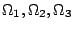
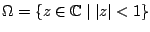
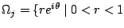
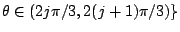
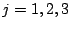

In Schwarz-like domain decomposition methods, a domain is broken into two or more subdomains and Dirichlet, Neumann, Robin or pseudo-differential problems are iteratively solved on each subdomain. For certain problems, it is well-known that the Dirichlet-Neumann iteration for two subdomains will converge in two steps. Let be an open domain and  a domain decomposition of such that each pair of subdomains shares an interface (for instance,  and  and , ). We will show a new Schwarz-like domain decomposition method that converges in two iterations in this situation.